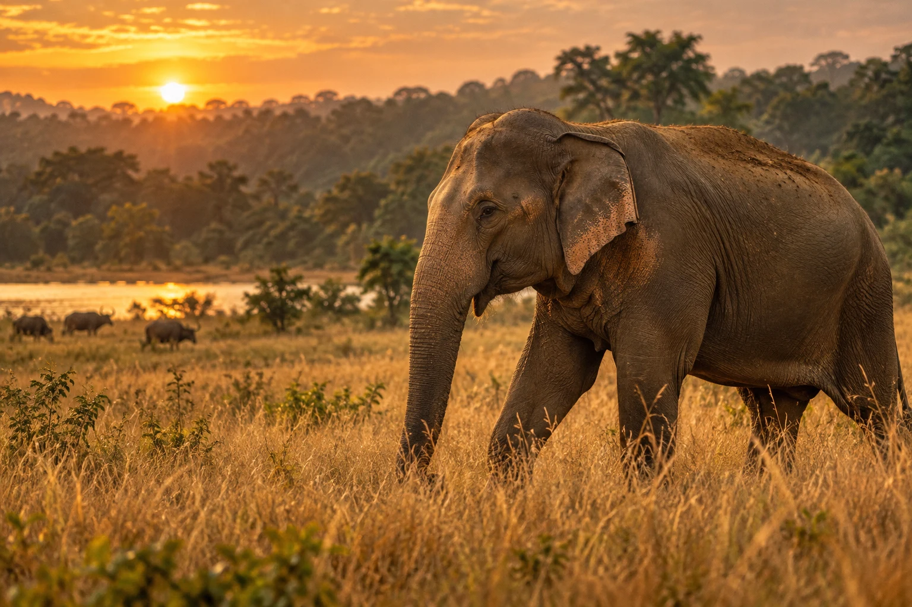
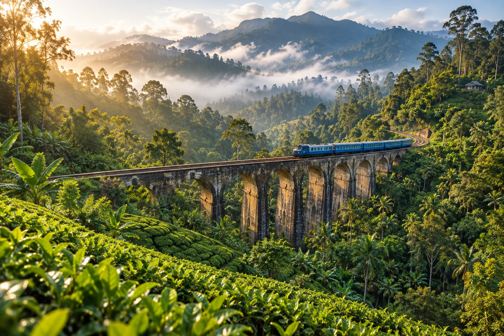
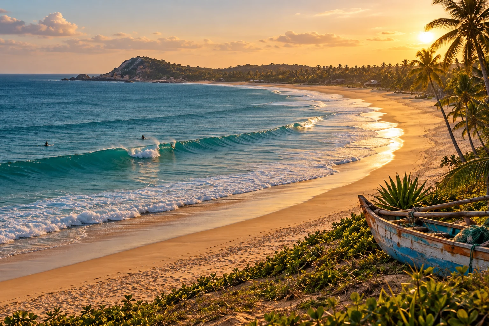
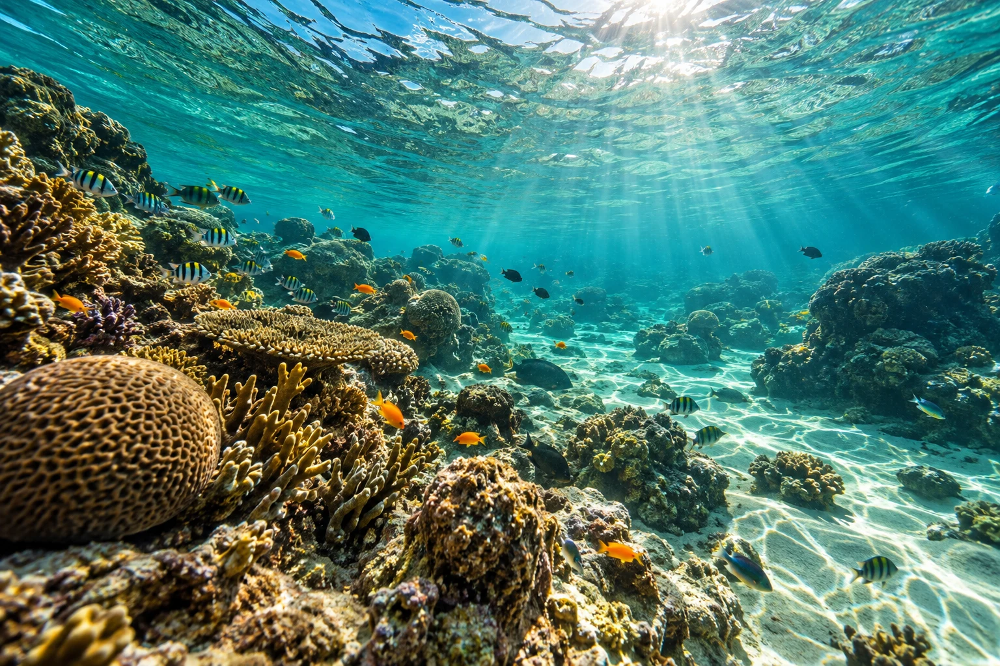
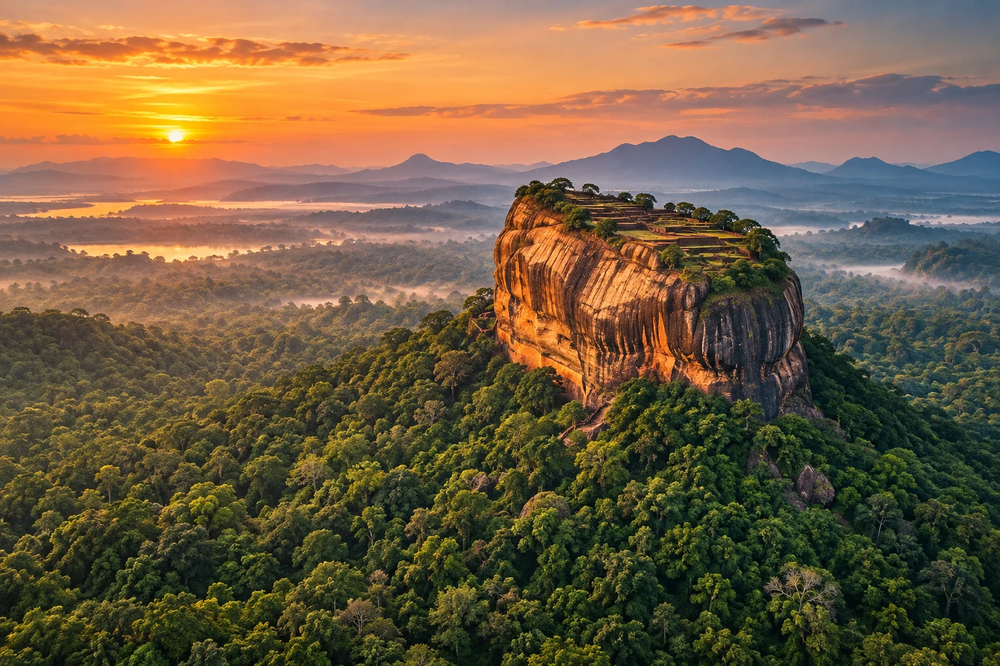

01SAFARI & ZWEMBADHet ritme van de jungle.3 NACHTEN
Jungle in. Slippers uit.
Een eiland ontdekken. Elkaar terugvinden.
Kijkversie · Ons reisverhaal. Bekijk de route, de plannen en alles voor onderweg.
Een eerste plan. Samen schuiven mag altijd.

01SAFARI & ZWEMBAD
02BERGEN & GROEN
03SURFEN & STRAND
04SNORKELEN & CHILLEN
05NATUUR & ONTDEKKENWildlife · jungle & groen · surfen · snorkelen · luxe · chillen. Lange transfers zijn reisdagen. De route en reistijden moeten nog definitief worden gecontroleerd.
17 april 15.25 Amsterdam → 18 april 08.30 Colombo · via Dubai
Heen: EK148 + EK650 · totale reistijd 13 uur 35 minuten
8 mei 10.05 Colombo → 20.00 Amsterdam · via Dubai
Terug: EK651 + EK149 · totale reistijd 13 uur 25 minuten
Emirates · Economy Saver · 4 reizigers · alle tijden lokaal
Exacte overstaptijden in Dubai staan niet op het gedeelde overzicht.
Jungle in. Slippers uit.
Een eiland ontdekken. Elkaar terugvinden.
Kijkversie · Ons reisverhaal. Bekijk de route, de plannen en alles voor onderweg.
Bewaar links, vergelijk en geef allebei jullie voorkeur aan.
Iets moois gevonden op Booking? Bewaar het hier.
Prijzen en beschikbaarheid vul je zelf in.
Jungle in. Slippers uit.
Een eiland ontdekken. Elkaar terugvinden.
Kijkversie · Ons reisverhaal. Bekijk de route, de plannen en alles voor onderweg.
Hotels, eten, activiteiten en vervoer. Vluchtprijzen blijven uit beeld.
Voeg een hotel, transfer of activiteit toe zodra jullie de kosten weten.
De verdeling is een begroting, geen offerte. Hotelvoorkeuren worden niet automatisch als kosten geteld. Neem elke post één keer op.
Jungle in. Slippers uit.
Een eiland ontdekken. Elkaar terugvinden.
Kijkversie · Ons reisverhaal. Bekijk de route, de plannen en alles voor onderweg.
Een gezamenlijke lijst voor alle kleine en grote voorbereidingen.
Gegevens verversen elke 20 seconden. Dit is een kijkversie zonder aanmelding. Aanpassen en opslaan zijn in deze versie uitgeschakeld.
Jungle in. Slippers uit.
Een eiland ontdekken. Elkaar terugvinden.
Kijkversie · Ons reisverhaal. Bekijk de route, de plannen en alles voor onderweg.
De tijden uit jullie boeking, plus praktische luchthaveninformatie.
Amsterdam 15.25 → Colombo zondag 18 april 08.30
EK148 + EK650 · via Dubai · 13 uur 35 minuten totaal
Colombo 10.05 → Amsterdam 20.00
EK651 + EK149 · via Dubai · 13 uur 25 minuten totaal
Emirates · Economy Saver · 4 reizigers · alle tijden lokaal
Controleer de geadviseerde aankomsttijd en balieopening bij Emirates en Schiphol. Circa drie uur vóór vertrek is de algemene richtlijn: ongeveer 12.25 uur. Dit is een planningshulp, geen bevestigde inchecktijd.
Paspoorten, boardingpassen, medicijnen, snacks en een set schone kleding in de handbagage. Check de actuele bagageregels in de boeking.
Actuele vertrekinfoEmirates gebruikt volgens de huidige informatie Terminal 3. Volg de borden Connections en kijk op de schermen naar het volgende vluchtnummer en de gate. Binnen Terminal 3 kunnen de afstanden groot zijn.
Bij aansluitende Emirates-vluchten wordt bagage normaal doorgestuurd. Controleer bij inchecken of het bagagelabel CMB vermeldt. Terug hoort daarop AMS te staan. Zoek eerst de gate en neem daarna rustig pauze.
Overstappen met EmiratesAankomst zondag 18 april om 08.30 uur. Volg de aankomstprocedure, haal jullie koffers op en spreek vooraf een duidelijk ontmoetingspunt af met de chauffeur.
De luchthaven ligt bij Katunayake, niet in het centrum van Colombo. Er zijn officiële taxibalies bij aankomst. Terug vertrekken jullie 8 mei om 10.05 uur; laat de chauffeur de ophaaltijd afstemmen op de incheckinstructies.
Officiële aankomstinformatieHet gedeelde boekingsoverzicht toont geen aankomst- en vertrektijden in Dubai. Voeg die later toe vanuit het volledige reisschema. Gates, terminals, bagageregels en procedures kunnen wijzigen. Praktische informatie gecontroleerd op 16 oktober 2026; controleer deze opnieuw voor vertrek.